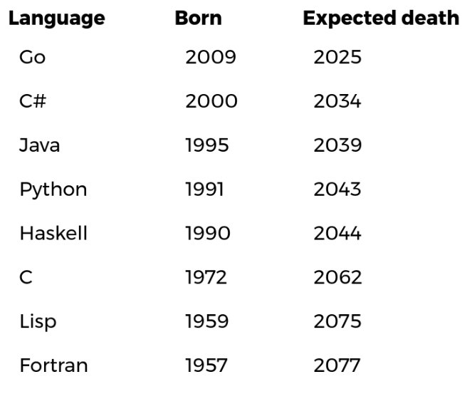
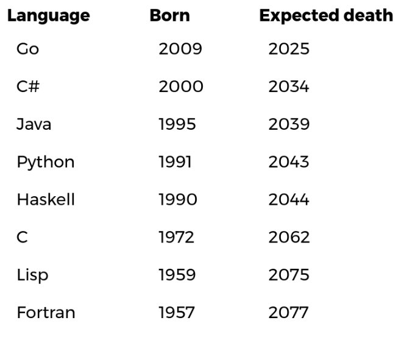

What Does Not Change is Always Change
小说家死了，他的小说还会有人读；程序员死了，他就被人忘了。99% 的软件，生命周期不超过 5 年，这意味着你现在写的代码，5 年后将毫无用处。如何做一些留得下来的事情，是每个程序员应该认真思考的问题。 —— 阮一峰

小说家死了，他的小说还会有人读；程序员死了，他就被人忘了。99% 的软件，生命周期不超过 5 年，这意味着你现在写的代码，5 年后将毫无用处。如何做一些留得下来的事情，是每个程序员应该认真思考的问题。 —— 阮一峰
